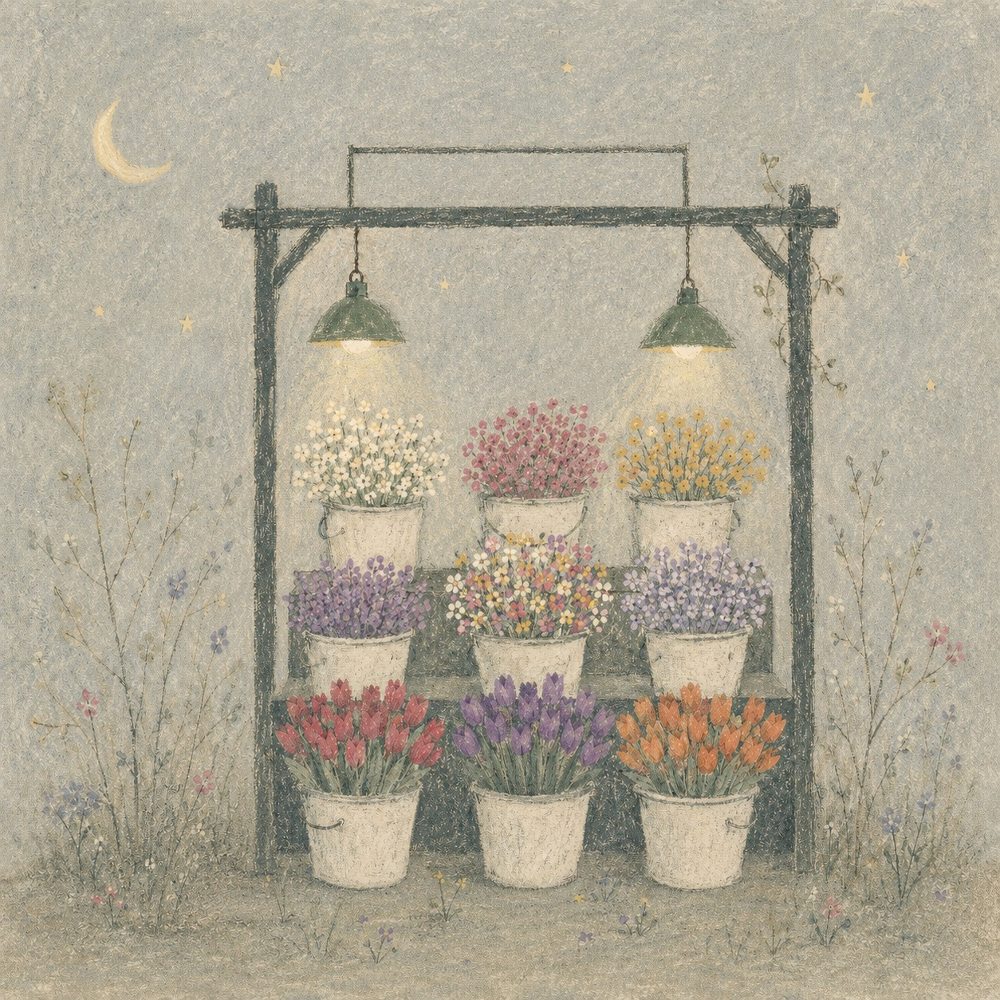

數位廣告投放Meta·Google·LINE
從預算配置、素材測試到 ROAS 與廣告占比管理，Meta、Google、LINE 廣告一起看。不是花錢買流量，是找到最對的那群人。
花，不會執著上一個季節。
河，也不會逆著時間流。
我們相信，每一次成長，都需要告別上一個自己。
川花是一條安靜的河。
我們把內容、行銷與美感，一瓢一瓢澆進你的品牌裡——直到它開出自己的樣子。
所以，我們不販售流量。
我們陪品牌完成一次又一次的蛻變。
不同於許多行銷顧問公司的一次性販售，我們集結實戰電商、整合行銷、市場嗅覺、獨特美感，為你打造最符合商品靈魂的口碑——讓每一次曝光都是一朵花，剛好開在對的人眼前。
絕不做廣撒花冤枉錢的行銷。我們致力挖掘每一個品牌的蛋黃層，把最核心、最有共鳴的受眾，慢慢向外開展。讓品牌被記住、喜歡，然後愛上。

把你的品牌，種進對的人心裡。
從預算配置、素材測試到 ROAS 與廣告占比管理，Meta、Google、LINE 廣告一起看。不是花錢買流量，是找到最對的那群人。
從策略到執行，我們最懂消費者心理。讓品牌的靈魂穿透每個觸點，長出自己的根，留下深刻印記。
從企業轉型、內容企劃到廣告轉換，串起每一個消費者的完美購物體驗。讓商品不只是被販售，而是品牌能被記住的完美記憶點。
重新梳理品牌靈魂、受眾與溝通語言，建立一致的內容矩陣。讓老品牌長出新樣貌，也讓新品牌站穩自己的位置。
每一個品牌，都是我們聆聽完河聲，親手開出來的。
走進教室，讓川花為你的品牌靈魂升級。
《楚辭》中的香草、美人、蘭芷、杜衡，象徵的是品格、理想與志向；河流則常被寫成時間、旅程與求索。川花把「川」理解為流動，把「花」理解為生命力。
我們是一群相信「慢」的力量的人。有人沉靜如杜衡，深入地下把養分默默轉化；有人清亮如蘭芷，站在明處把品牌的樣子清楚說出；也有人柔韌如藤，纏繞在資料、策略與美學之間，替品牌找到支點。沒有一朵花為了搶眼而開，只為了成為自己該有的樣子——我們相信品牌也是。
川花創辦人楊詠婷，喜歡用心閱讀數據背後的品牌意象，以多年經驗呵護每一朵獨一無二的品牌之花，映照每一家公司的靈魂核心。在紛亂的時代，她相信慢慢做好眼前的每一小步——讓花期綿延，川流不息。
不管你是正在轉型的品牌，建立自己宇宙的創作者，
還是有靈魂、有美學，但還沒找到落地方式的人——
我們在找的，是靈魂最對的彼此。
課程報名、諮詢預約、合作洽談，都歡迎透過官方 LINE 找我們。
1. 本網站由「川花有限公司」(以下稱本公司)經營，提供品牌行銷諮詢教學課程之銷售與預約服務。
2. 消費者於本網站完成付款，即視為同意本服務條款與退款改期規則。
3. 課程與諮詢時段採預約制，付款完成後由官方 LINE 專人與消費者確認時段。
4. 本公司保留調整課程內容、時段與價格之權利；已成立之訂單不受調價影響。
5. 條款未盡事宜，依中華民國相關法令辦理。
1. 本公司於您報名課程或預約諮詢時，將蒐集姓名、電話、Email 等必要個人資料，僅用於訂單處理、課程通知與客服聯繫。
2. 您的個人資料不會提供予第三人，亦不會用於前述目的以外之用途；金流資料由合作之金流服務商依其資安標準處理，本公司不留存信用卡卡號。
3. 您可隨時透過客服信箱或官方 LINE 申請查詢、修改或刪除您的個人資料。
4. 本政策如有修訂，將公告於本網站。
推開門，空氣就不一樣了。
聊完之後，讓你的品牌開花
川花審核後若合適合作，將於 1–2 個工作天內與您聯繫
付款完成後，請透過官方 LINE 與專人確認時段
線上完成付款後，由川花官方 LINE 與你聯繫